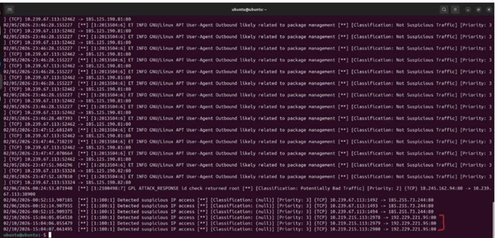
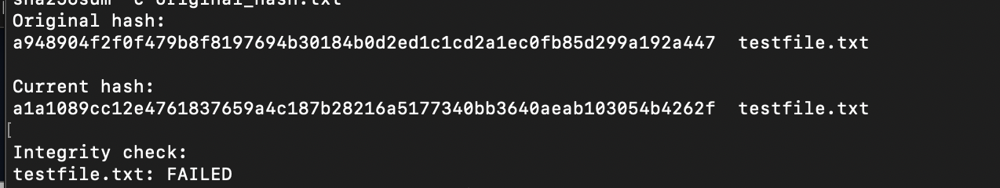

Homemade IDPS
Built and tested a simple network intrusion detection system using Suricata on an Ubuntu Linux virtual machine. I created custom rules to detect ICMP traffic, generated test traffic, and analyzed Suricata alerts.
Computer Science student exploring cybersecurity and secure systems.

Built and tested a simple network intrusion detection system using Suricata on an Ubuntu Linux virtual machine. I created custom rules to detect ICMP traffic, generated test traffic, and analyzed Suricata alerts.

Built a simple file integrity checker that uses cryptographic hashes to detect whether files have been modified. The program compares a file's current hash with a previously stored value and reports any changes.